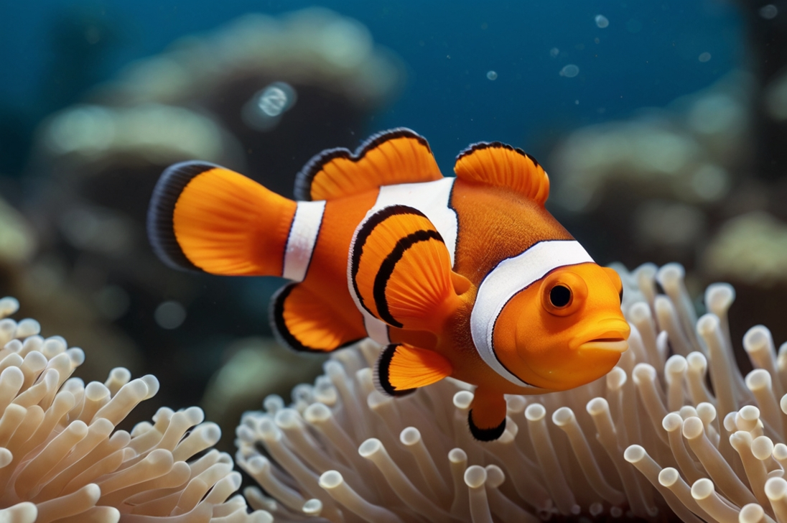

Nemo
„Průzkumník smíchu v podvodní zahradě“

🐠 „I malá ploutev může zamíchat vlny.“
- Povaha: Odvážný, veselý, přátelský
- Bydliště: Barevný korálový úkryt
- Oblíbená činnost: Schovávačky v sasankách a objevování
Moc neumí plavat, ale ví, jak se ztratit a najít. Nemo je jako písnička z bublin — překvapivý, srdečný, nezastavitelný v maličkostech. Nejde o to být nejrychlejší. Jde o to být tím, kdo se nebojí zkoumat. A když se zasměje, smích zní jako škádlivá vlna.